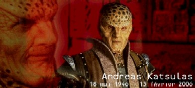

Forums galactiques > Assemblée Galactique : diplomatie officielle > Dernier Merci pour un Adieu
| K'Lim Ero Respect diplomatique : 257  05/04 ETU 17:58 | Score : 0 Détails "Sous race" ?
Je mets ceci sur le compte du choc subi ... Pas besoin pour moi de relever ... Cette pensée, d'elle-même, sera vite un terrible poids pour vous ... Vous n'êtes pas comme cela, j'en suis certain. Considérons que je n'ai rien lu ... | ||
| Elyas Respect diplomatique : 83 05/04 ETU 18:02 | Score : 8 Détails Commandant K'Lim Ero, votre discours serait risible pour un sujet plus frivole. Dédaignant de considérer même ce dont vous parlez, vous vous évertuez à critiquer gratuitement, aveuglément, un sujet dont vous n'avez au fond que faire.
Vous ne cherchez rien d'autre qu'une cible vers qui cracher votre fiel, la hargne et l'acharnement que vous mettez en sont bien la preuve. Qu'est ce que les Hydropathes vous ont bien fait qui vous mette dans un tel état? Nous vous avons-nous offensé? Causé un quelconque problème? Non, bien sûr que non. Avez-vous ne serait-ce qu'avancé un motif de grief autre que votre haine farouche de la différence, et du respect que nous portons à tous? Non plus. Pourquoi attaquer les hydropathes entre toutes les coalitions? Car dans votre esprit vindicatif c'est la coalition la plus "amusante" à attaquer pour satisfaire votre mesquinerie. Sachant à quel point nous répugnons à utiliser la force, vous prenez un malin plaisir à calomnier de la façon la plus ignoble et grossière qui soit, insultant un mort, crachant sur des idéaux, sans même avancer d'arguments. C'est une des seules coalitions pour laquelle votre impudence crasse ne sera pas nécessairement châtiée par les armes. Vous pouvez donc continuer à distiller votre haine. Et si, pris d'un courroux bien compréhensible, un de nos membres vous portait le camouflet Ô combien mérité, nul doute que vous viendrez geindre et pleurnicher en reprochant aux hydropathes de ne pas avoir respecté les idéaux sur lesquels vous crachez présentement. Je suis contre l'utilisation de la force au nom des hydropathes. En ce qui me concerne, votre mépris me glisse dessus et me laisse indifférent. L'ampleur même de votre agressivité et les qualificatifs démesurés que vous vous plaisez à user ôte toute crédibilité à votre discours. Mais si Largo, qui pour sa part connu G. Fore, dans un élan de colère se laissait aller à vous infliger un chatiment de taille, je ne viendrais pas vous plaindre. Bien que je sois contre une action armée, je ne condamnerais pas non plus l'action de Largo en son nom propre, même si j'espère que son calme et sa diplomatie lui reviendront avant. Mais finalement, ce que je trouve de plus frappant dans votre discours, si tant est qu'on puisse voir une pensée réfléchie dans tout ce verbiage inutile, c'est que vous vous écoutez parler. Pérorant à vous en assourdir vous-même, vous ne lancez qu'une litanie d'insultes, parfois joliment tournées, toujours creuses. Votre verve doit finalement avoir comme but premier de contenter vos oreilles, tout imbu de votre personne et de votre supposé rhétorique que vous semblez être... | ||
| guitell Respect diplomatique : 144 05/04 ETU 18:05 | Score : 2 Détails Largo vous pourrez remarquer que dans son dernier message K'limero ne vous insulte pas les choses s'ameliorent
En revanche largo il est vrai que le terme de sous race me choque egalement. Pourriez vous evitez de dire ce genre de choses surement du a votre colere, et peut etre meme retirer ces paroles et vous pardonez. En revanche meme si K'Lim Ero pas utiliser ce terme pour votre coalition, il l'aegalement discredite c'est pourquoi je lui demande aussi de s'excuser aupres du comandant largo | ||
| Largo Respect diplomatique : 442  05/04 ETU 18:10 | Score : 1 Détails Tout simplement magnifique. En écoutant parler le commandant Elyas, je fus parcouru de frissons. Je suis tout bonnement fier d'être un Hydropate, fier qu'Elyas soit un Hydropate. Je ne regrette plus d'avoir renoncé à utiliser la force. Je reviens dans le droit chemin, en ayant me souvenant d'une chose: les mots, seuls les mots ont un réel pouvoir.
| ||
| Elyas Respect diplomatique : 83 05/04 ETU 18:33 | Score : 5 Détails Commandant Largo, rien ne saurait plus vous honorer que cela.
Voilà! Voilà tout ce qui fait le mouvement hydropathe! Voilà ce qui fait que je suis fier d'en faire partie. Voilà enfin, ce qui va montrer que nous ne sommes pas les idéalistes aux yeux embués que le commandant K'Lim Ero cherche pitoyablement à voir en nous. Car Commandant K'Lim Ero, voyez la cruauté qui est celle de Largo. Voyez la correction cent fois plus juste et pourtant cent fois pire, que celle que vous appeliez de vos voeux en provoquant sciemment les hydropathes, en tentant de faire appel aux sentiments de révolte qui sommeillent en chacun de nous face à la haine aveugle. Car bien pire que votre corps, c'est à votre esprit que nous allons nous en prendre. De vos paroles boueuses, chassées par la pluie de nos mots, ne restera bientôt plus que le squelette rabougri et noirci de votre aigreur velléitaire. J'ose espérer que la vacuité de votre pensée ne vous poussera pour autant pas à nous sous-estimer à nouveau à l'avenir, car dure sera alors votre chute. | ||
| K'Lim Ero Respect diplomatique : 257 05/04 ETU 18:48 | Score : 3 Détails Effectivement, Commandant Elyas, pérorer est un acte hautement intellectuel ... Il est des paradoxes qui doivent être acceptés, compris, analysés et, pour finir, acceptés non pas intellectuellement ou philosophiquement mais dans les gènes afin que la défense d'une voie, d'une philosophie puisse s'assumer non pas avec son intellect mais avec son âme.
La seule défense qui soutienne le choc des hyperatomiques, le choc des ioniques, celui des barges de débarquement reste celle de l'âme. Mes paroles étaient "boueuses" ? Je les qualifierais plutôt de "perturbatrices", "d'engagées" et "déstabilisantes". Si j'avais sous-estimé les hydropathes, me serais-je tant usé à souligner quelques paradoxes ? Aurais-je passé quelques heures à repousser le Commandant Largo dans ses retranchements ? Vous ne verrez pas non plus invoquer votre "pitié" ... Elle ne sera d'aucun réconfort quand le Grand Test sera sur nous tous ... Beaucoup d'humains vivent enfermés dans leurs dogmes oubliant de lire les étoiles, de lire les prédictions, de jeter un regard critique sur leurs propres réalisations, leurs erreurs, leurs choix ... Il vous arrivera, tout comme à moi, un jour de devoir faire face à l'Epreuve, la vraie, celle qui nous différenciera des animaux ou des formes de vie ratées. Etes-vous certain de pouvoir affronter cette Vérité, ce jour-là ? Etes-vous sûr qu'à la question posée ou au challenge proposé, vous devrez répondre comme un Hydropathe ? L'épreuve proposée au Commandant Largo ne l'a pas tué, l'un des philosophes humains les plus perspicaces n'a-t-il pas dit qu'il en est sorti plus fort qu'avant ? | ||
| Samsagace Respect diplomatique : 183 05/04 ETU 18:57 | Score : 1 Détails Gabriel', vous ne serez jamais seul. Dans la vie, comme dans la mort, quelqu'un sera à vos côtés. J'ai des amis, pas tellement, mais j'en ai. j'essais de m'en faire le plus possible, pour les rendre heureux. Mourez, si vous le voulez. Mais avant, acceptez mon amitié.
Merci, Samsagace. | ||
| wima Respect diplomatique : 402  05/04 ETU 19:01 | Score : 0 Détails Cher Samsagace, Gabriel est mort depuis des décennies...
| ||
| Samsagace Respect diplomatique : 183 05/04 ETU 19:08 | Score : 1 Détails Paix à son âme, je suis en retard...sois heureux Gabriel. la mort est le néan mais pas le chaos. C'est déjà ça...
| ||
| l\'abbé ramouflon Respect diplomatique : 579  05/04 ETU 19:56  | Score : 2 Détails après les relativistes, on a les nihilistes !
voici les beaux fruits de la dégénérécence ... | ||
| Gaïa La Protectrice Respect diplomatique : 64 06/04 ETU 00:37 | Score : 0 Détails que Gabriel, enfant de Gaîa, se réjouisse car le serment n'a pas été rompu, il y a toujours des personnes pour se souvenir de toi, commandant, et meme si ils sont opposés a toi, sache qu'ils ne t'oublient pas...
Repose en paix malgré les sombres songes qui peuvent t'animer a propos de certaines personnes, car amis ou ennemis, ne t'ont pas oubliés... Que Gaïa veille éternellement sur toi fils de la cission Ultreme, car tu nous fais encore réagir... | ||
| wima Respect diplomatique : 402 06/04 ETU 12:44 | Score : 0 Détails Il n'y a pas que l'AST qui est adepte du culte de la personnalité....En tout cas, ça fera plaisir à Gabriel, dont les descendants doivent vraisemblablement être dans la Galaxie....
| ||
| Largo Respect diplomatique : 442 06/04 ETU 12:47 | Score : 0 Détails C'est une question de respect mon cher Wima. Et non pas de culte de la personnalité.
Quant à la descendance du commandant Fore, si elle est présente dans la Galaxie, nous ne l'a connaissons pas encore. Cordialement. Commandant Largo, Hydropate. | ||
| ERLORAK Respect diplomatique : 243  06/04 ETU 13:03 | Score : 1 Détails Son âme s'en est allée dans une autre galaxie...Puisse-t-il y trouver bonheur et sagesse.
| ||
| darksith Respect diplomatique : 170 06/04 ETU 13:52 | Score : 0 Détails darksith n'avait pas dit un mot dans le précédent débat, car il ne voulait pas s'emporter. Cependant il prit le temps de préciser quelque chose:
"Je plussoie Largo pour cette notion de respect. Gabriel Fore etait le fondateur de notre mouvement mais en aucun cas un modèle unique à suivre absoluement. Il était le premier à nous répéter de penser par nous mêmes afin d'éviter d'être mené en bateau. Donc ce n'est point un culte de la personnalité que nous honorons, mais bien la défense d'un ami et grand commandant de la galaxie." Puis darksith quitta la salle, estimant que le sujet était clos. | ||
| AlphonseHubert Respect diplomatique : 690  06/04 ETU 16:28 | Score : 4 Détails Puisse son ego étouffer la Galaxie à jamais.
| ||
| Gaïa La Protectrice Respect diplomatique : 64 06/04 ETU 21:14 | Score : 2 Détails Outrée par ce propos, Gaîa s'emporta :
Il ne pourra pas le faire, monsieur, car le votre le devance depuis longtemps dans cette tache... | ||
| wima Respect diplomatique : 402 06/04 ETU 21:19 | Score : 1 Détails Euh, je n'en suis pas aussi persuadé que vous. Je crois que Gabriel avait tout de même quelques longueurs d'avance. Et jamais un Commandant n'aurait pu le rattraper. Il excellait, vous savez ?
|
Forums galactiques > Assemblée Galactique : diplomatie officielle > Dernier Merci pour un Adieu